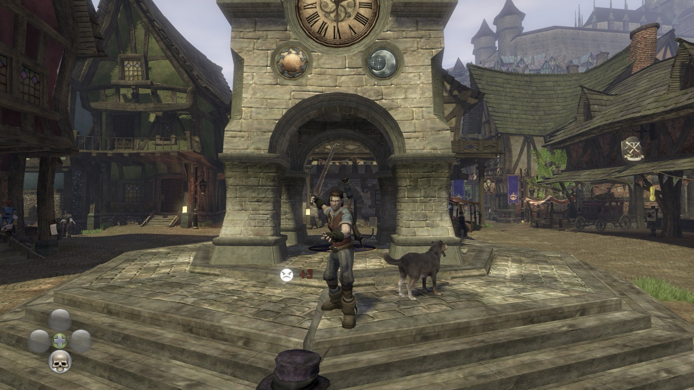

What you get
- The whole game, playable from start to finish on Apple Silicon Macs.
- A native Metal renderer (through MoltenVK) at your window's full Retina resolution, or a chosen full-screen resolution.
- A stable 60 fps nearly everywhere with the frame rate cap.
- Keyboard and mouse: WASD, mouse camera, mouse buttons for melee and ranged, and every key rebindable in the launcher. A controller works too.
- A launcher app with display, frame rate, VSync and power-saving settings.
- Install from ISO: the app checks your disc and title update, installs them and builds the game on your Mac by itself.
What you need
- An Apple Silicon Mac (M1 or newer) with macOS 14 or later.
- Your own Fable II disc image (
.iso) and title update 1 for your disc. - About 10 GB of free disk space.
- Apple's Command Line Tools: the app offers to install them if they're missing.
Install
- Download the latest release
(
.dmg), open it and drag Fable 2.app to Applications. - The app isn't signed by Apple, so macOS blocks it the first time. On macOS 15 or later, double-click it, click Done, then open System Settings → Privacy & Security and click Open Anyway. On macOS 14, right-click the app and choose Open.
- Click Choose… in the Title update row and select the folder with your title updates.
- Click Install from ISO… and choose your disc image. The app installs it and builds the game (2 to 15 minutes, once).
- Click Play.
More detail: building from source and running and options.
Questions
Can I play Fable 2 on a Mac?
Yes, with this port, on any Apple Silicon Mac with macOS 14 or later, using your own disc image of the Xbox 360 game and its Title Update 1 (title updates aren't on the disc).
Does it work on M1, M2, M3 and M4 Macs?
Yes. It runs natively on every Apple Silicon Mac. Intel Macs aren't supported.
Can I play with keyboard and mouse?
Yes. WASD moves, the mouse moves the camera and its buttons attack; every key can be rebound in the launcher. A controller works too.
Is the game included?
No. The download contains no game files or game code. The app builds the game from your own disc image on your Mac.
Which discs work?
The Game of the Year discs checked so far (media IDs 05FBECEA and 716F0A0D),
with title update 1. The app checks any disc you give it before installing.